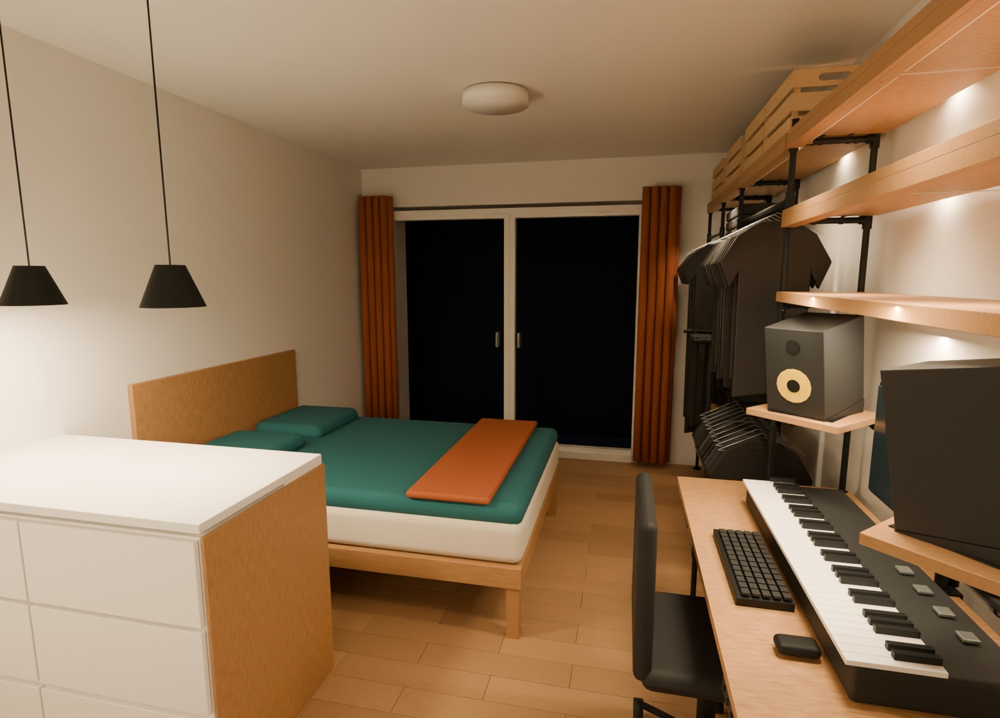
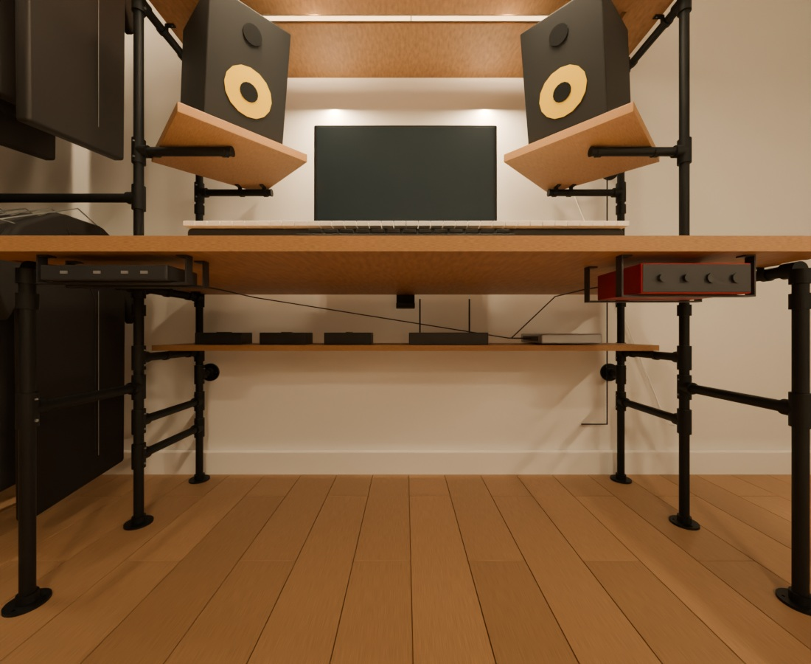

SMALL ROOM, USEFUL DETAILS↘
Less duplication.
More breathing room.
The desk shares the floor-mounted shelf uprights. Two front returns finish beneath the wood, with no separate rear desk legs or protruding front posts.
Berlin studio · a place for everything
Black pipe. Warm oak. A little more room to live.
Explore freely in 3D, then build it piece by piece.

The desk shares the floor-mounted shelf uprights. Two front returns finish beneath the wood, with no separate rear desk legs or protruding front posts.

An original illustrated planning manual
21 stages. Every frame component accounted for.
Start with a sample fitting, not a final wood cut.
Preparation
The whole frame, priced and accounted for
Required pieces, purchase packs and original supplier links.
Budget prices retained from 19–20 October 2026.
Frame, structural oak, light covers, IKEA lighting, allowances and a 10% reserve.
Adds six KNAGGLIG crates and the corresponding reserve.
Tick items you have. Saved in this browser only.
| Purchased | Part / specification | Pieces | Buy | Pack / unit | Total | Source |
|---|
· Supplier links open in a new tab. Store availability, delivery and final prices must be checked. Timber, machining and fixing costs are allowances; no exact timber supplier has been selected.